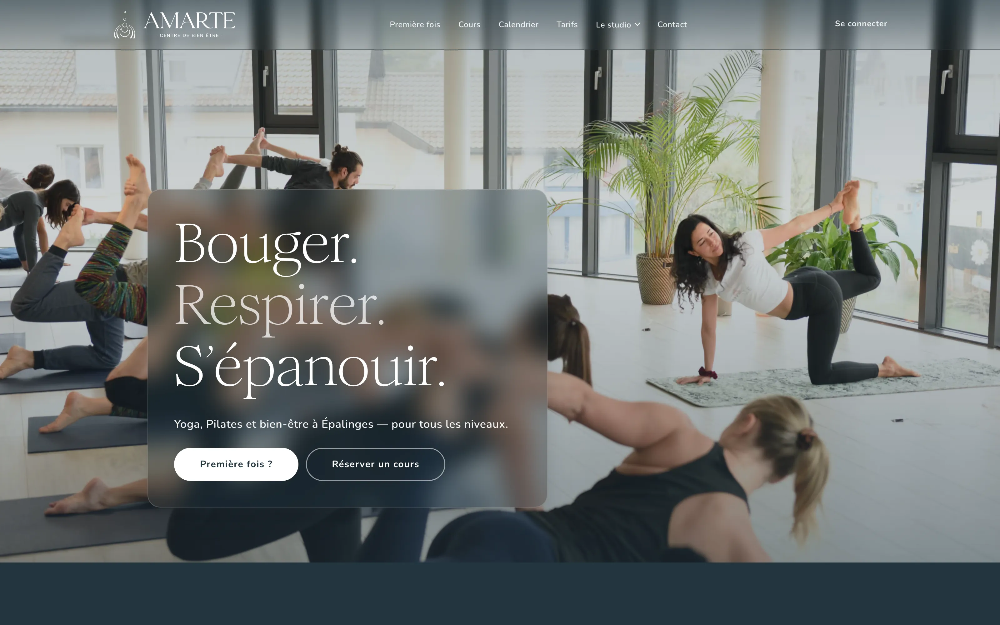
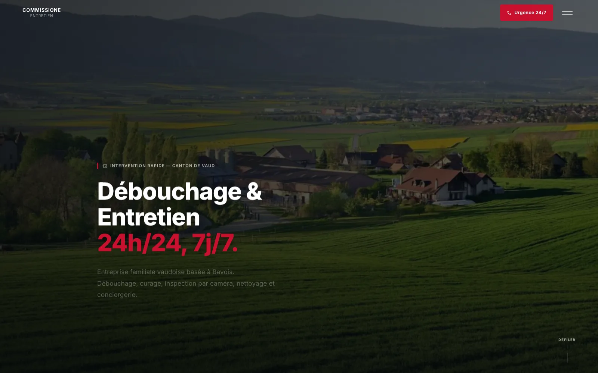

Un design dessiné pour vous
Une direction artistique tirée de votre métier et de votre image, pas un gabarit réutilisé. Des interfaces précises, lisibles, pensées en priorité pour le mobile.
Un site vitrine ou un site d'entreprise dessiné et codé sur mesure, à Lausanne, par les deux frères qui le mettront en ligne. Pour les PME, les commerces et les indépendants de l'arc lémanique.
Chaque site est construit de A à Z pour votre entreprise. Rien n'est pris sur étagère.
Une direction artistique tirée de votre métier et de votre image, pas un gabarit réutilisé. Des interfaces précises, lisibles, pensées en priorité pour le mobile.
Sans WordPress ni Wix : pas d'extension à maintenir, rien d'inutile n'est chargé, et la page s'affiche presque instantanément sur téléphone.
Votre site est hébergé chez Infomaniak, en Suisse, avec un guide pour gérer votre hébergement en toute autonomie.
Balises, données structurées, plan du site et textes travaillés avec vous autour de votre activité et de votre région, pour être trouvé à Lausanne et dans le canton de Vaud.
Une structure et des animations qui guident vos visiteurs vers l'appel, le formulaire ou la demande de devis.
Maintenance, évolutions, petites retouches : nous restons joignables une fois le site en ligne.
Quatre étapes et un seul interlocuteur, du premier café à la mise en ligne. Comptez 3 à 6 semaines pour un site vitrine.
Nous écoutons votre activité, vos clients et ce que le site doit obtenir. Sans engagement, réponse sous 24 h ouvrées.
Périmètre, calendrier et prix, définis ensemble après ce premier échange. Le paiement peut être échelonné en plusieurs mensualités.
Eliott dessine, Matt code. Des points réguliers, et vous validez à chaque étape.
Le site part sur son hébergement suisse. Nous restons disponibles pour la maintenance et les évolutions.
Quatre exemples en ligne, du cinéma de quartier à l'entreprise familiale.
 Voir le site
Voir le site
Cinéma d'art et essai, rue du Maupas à Lausanne — un accueil en mur d'affiches, l'agenda des séances et la carte de membre.
 Voir le site
Voir le site
Café-restaurant de quartier, rue Centrale à Lausanne — carte par moment de la journée, horaires et réservation en un geste.

Voir le siteYoga et Pilates à Épalinges, sur les hauts de Lausanne — disciplines, profs et horaires réunis dans un parcours qui mène à la réservation.

Voir le siteEntreprise familiale d'entretien à Bavois, dans le canton de Vaud — cinq prestations, demande de devis et appel direct partout.
Nous gardons ce qui fonctionne — contenus, adresses des pages, référencement acquis — et nous redessinons et recodons le reste. Le nouveau site remplace l'ancien sans interruption.
Parler de votre refonteUn site WordPress assemble un thème et des extensions qu'il faut maintenir et mettre à jour. Nous écrivons le code de votre site de A à Z : rien d'inutile n'est chargé, la page s'affiche presque instantanément sur téléphone, et le site vous appartient de bout en bout.
Oui. Chaque site est dessiné pour le petit écran d'abord, puis adapté aux tablettes et aux ordinateurs. La plupart de vos visiteurs arrivent depuis un téléphone, c'est là que le site doit être impeccable.
Le site est hébergé en Suisse chez Infomaniak, hébergement inclus, avec un guide pour le gérer vous-même. Le nom de domaine, le code et les contenus vous appartiennent.
Oui. Le Zinéma, rue du Maupas, Le P'tit Central, rue Centrale, ou Amarte Studio à Épalinges sont des sites que nous avons dessinés et codés pour des lieux de Lausanne et de ses hauts. Artisans, créatifs et indépendants du canton de Vaud nous confient aussi leur site.
Un café ou un appel, une proposition, puis on construit. Réponse sous 24 h ouvrées, sans engagement.
Lausanne, Suisse —